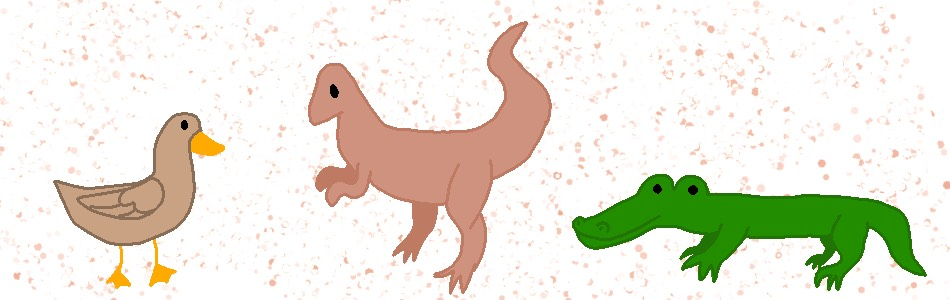
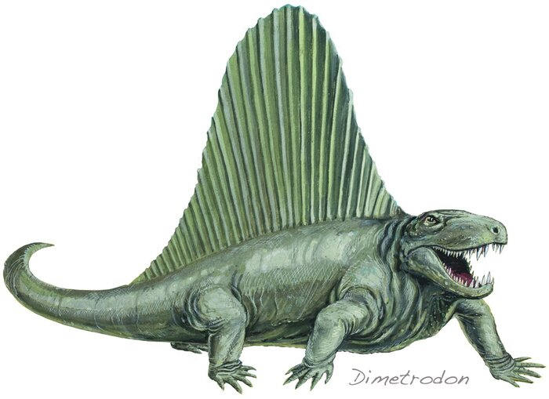

Dinozaury to były bardzo zróżnicowane stworzenia. Ich nazwa oznacza "straszne jaszczurki", mimo
że nie były blisko z nimi spokrewnione. Reprezentują natomiast oddzielną grupę „gadów”, oprócz
ptaków ich najbliższymi współczesnymi krewniakami są krokodyle.

Jak wiele wymarłych form, nie wykazują one cech tradycyjnie uznawanych za „gadzie”, jak
zmiennocieplność czy poruszanie się na kończynach odwiedzionych na boki. Co więcej, wiele grup
prehistorycznych zwierząt, takich jak mozazaury, ichtiozaury, pterozaury, plezjozaury, a nawet
Dimetrodon, popularnie uznawanych za dinozaury, w rzeczywistości nimi nie są.

Przez pierwszą połowę XX wieku, zanim uznano ptaki za dinozaury, większość społeczności naukowej
uznawała dinozaury za powolne i zmiennocieplne. Zmiana nastąpiła w latach 60. - nazywane były
odrodzeniem dinozaurów. Stwierdzono, że wszystkie dinozaury, w tym mezozoiczne, prowadziły aktywny
tryb życia i cechowały się szybkim metabolizmem, tak jak dzisiejsi ich przedstawiciele. Wykazywały
też liczne adaptacje umożliwiające interakcje społeczne.